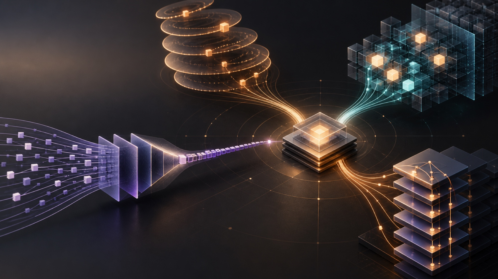

KDA + Gated MLA
把大部分历史压成固定状态，周期性用 MLA 做“精确回看”；再用 AttnRes 解决跨深度的信息稀释。

Kimi、Qwen、DeepSeek、GLM 正在把“读完整个历史”改写成：压缩状态、稀疏检索、潜变量缓存，以及跨层路由。
结论先说：没有一个“最强 attention”。真正收敛的是一种混合配方——大约 3 层常数状态的线性注意力，穿插 1 层能精确回看的稀疏/潜变量 attention；再把跨层信息流一并重做。
把大部分历史压成固定状态，周期性用 MLA 做“精确回看”；再用 AttnRes 解决跨深度的信息稀释。
线性状态负责连续记忆，QSA 的轻量 indexer 在 micro-block 粒度挑回重要上下文。
保留 MLA 的低秩 KV 压缩，再加 lightning indexer，只让主 attention 读取 top-k token。
最直接的“集大成”路线：3:1 的 linear/sparse hybrid，加上多分支跨层信息流。
| MODEL | LAYER MIX | 历史怎么存 | 每步读多少历史 | 最关键的代价 |
|---|---|---|---|---|
| Kimi K3 | 69 KDA + 24 Gated MLA | KDA 固定 state；MLA 压缩 KV | KDA 与 L 无关；MLA 全量 | scan kernel + 两种 cache |
| Qwen3.8-Flash-Next | 36 GDN + 12 QSA | GDN state；QSA 压缩索引与 KV | QSA budget 2,048 | micro-block 选择 + gather |
| DeepSeek DSA | 稀疏 MLA | MLA latent KV + index K | top-k 2,048 | indexer 仍需扫历史 |
| GLM-5.3-Flash | 34 KDA + 11 DSA | 固定 state + sparse MLA cache | DSA top-k 2,048 | KDA / DSA 双后端 |
注：layer mix 来自公开模型配置；“每步读多少”描述主 attention 的预算，不等于 indexer 自身完全没有 O(L) 工作。
KDA / GDN 不再保存可逐 token 随机访问的完整 KV，而是维护固定大小的递归状态。decode 的历史成本不随上下文长度增长；代价是有限状态会覆盖旧信息，且 prefill 依赖 chunkwise scan，而不是普通 FlashAttention。
DSA / QSA 没有把历史消失掉：它们仍保留可回看的缓存，只是主 attention 不再扫描全部位置。收益取决于 indexer 能否又快又准，以及 top-k gather 是否能在 GPU 上保持规则访问。
AttnRes、Gated Residual、mHC 解决的是另一维：当前层该从哪些早期表示读取、往哪些 residual stream 写。它们不是长上下文 attention，但与新 attention 一起出现，因为横向压缩更激进后，纵向的信息保真变得更重要。
Kimi Linear 做机制验证，Kimi K3 把它扩到 2.8T 参数与 1M context。
KDA 是对 Gated DeltaNet 的细粒度门控改造。直觉上，它不是把新 KV 一股脑累加进 state，而是先根据 key 检查“这个槽位已经写了什么”，用 delta rule 做定向擦除/改写；更细的 gate 决定每个通道忘多少。
这解释了 hybrid 的必要性：KDA 提供便宜的连续记忆，Gated MLA 保留精确 token 级回看。Kimi Linear 报告 KV cache 最多下降 75%、1M context 相对 MLA 的 TPOT 最多快 6.3×；K3 使用 69 KDA + 24 Gated MLA。
Kimi K39369 + 241,048,576AttnResQwen3-Next 的 GDN hybrid 已成为主干；Qwen3.8-Flash-Next 又把全局层换成 QSA。
QSA 的关键不是“又一个 top-k”，而是让轻量 indexer 先压缩历史，并在 micro-block 粒度选候选区，再让主 attention 精读。相比逐 token 索引，这更贴近 GPU 连续访存，也更容易把 selector 的成本摊薄。
公开配置是 48 层、每 4 层一个 QSA：36 个 GDN + 12 个 QSA。indexer budget 为 2,048，压缩比 4。Residual 同时升级成四分支 Gated Residual——这是 Qwen 这条路线真正“体系化”的地方。
Qwen4 arch4836 + 122,0484×从 V3.2-Exp 验证，到 V4 / V4.1 延续；它是对既有 MLA 栈改动最小的一条稀疏化路径。
DSA 保留 MLA 的 latent KV cache，在主 attention 前增加 lightning indexer。Indexer 用较小的 key 表示为每个位置打分，选 top-k 位置，再在这些位置上执行精确 MLA。V3.2-Exp 的公开配置是 64 个 index heads、128 维 index key、top-k 2,048。
它的优势是路径清楚：MLA 已经压低 cache 宽度，DSA 再压低每次读取的长度。但别把 top-k 当成 O(1)：原始 indexer 仍要对历史打分，只是维度更窄、可用 FP8，并由 DeepSelect / DeepGEMM 专门优化。
V3.2-ExpV4 / V4.12,048128MLA rank 512GLM-5 先接入 DSA，5.2 用 IndexShare 降 selector 成本，5.3-Flash 再加入 KDA。
GLM 的演进最能说明行业趋势：单纯 sparse 还不够，indexer 自己也需要降本。GLM-5.2 的 IndexShare 让每四个稀疏层复用一个 indexer；官方称在 1M context 下把每 token FLOPs 降低 2.9×。
5.3-Flash 的公开配置则是 45 层：34 KDA + 11 DSA，1M context，DSA top-k 2,048，并用 4-way mHC 重做 residual stream。它不是发明单个新算子，而是目前最激进的开源“系统配方”。
GLM-5.3-Flash4534 + 111,048,576mHC × 4这里是工程选型判断，不是统一 benchmark 排名。模型能力、训练预算与 kernel 成熟度都会改变答案。